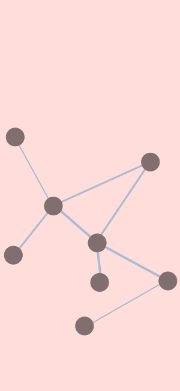
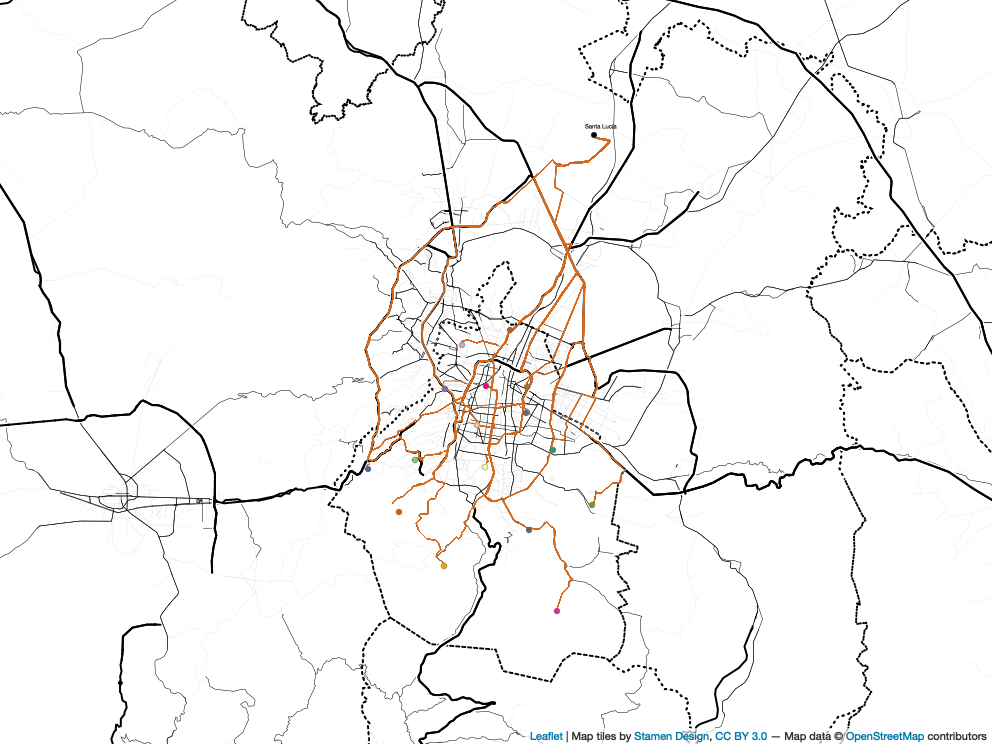
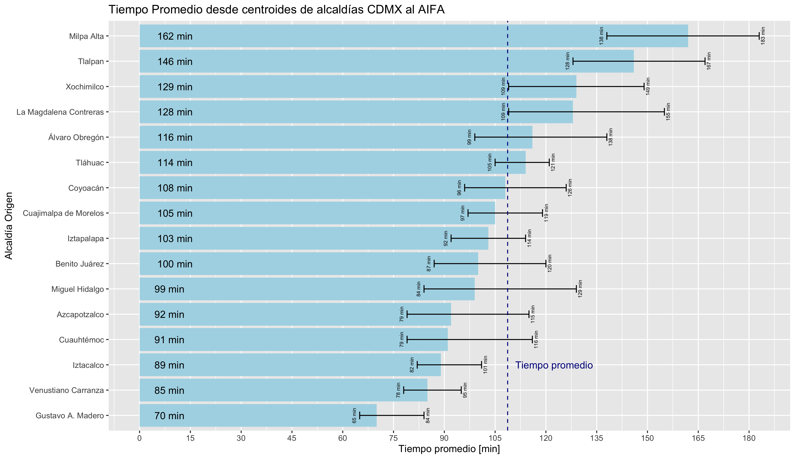

J. Julian Mendoza
Transport Planner and Data Analyst
Welcome to my portfolio site, please take some time to review my work and education history, as well as my data analyst and transport projects.
Bienvenido a mi portafolio, por favor tómate un momento para revisar mi historial laboral y académico, así como los proyectos que he realizado en análisis de datos y transporte.

Project Showcase
Average travel time to AIFA (Felipe Ángeles International Airport)
This small project consisted in creating connections with Google Maps Api to get routing requests with travel times from each of the municipalities in Mexico City to the recently built Felipe Ángeles International Airport (AIFA).
Proyecto pequeño en donde se utilizó la conexión con la API de Google Maps para realizar consultas de tiempos de viaje desde las alcaldías de la Ciudad de México hacia el Aeropuerto Internacional Felipe Ángeles (AIFA).


Quarto is a multi-language, next generation version of R Markdown from RStudio, with many new new features and capabilities. Like R Markdown, Quarto uses Knitr to execute R code, and is therefore able to render most existing Rmd files without modification.
Aquí va algo de texto

Combine markdown and Julia code to create dynamic documents that are fully reproducible. Quarto executes Julia code via the IJulia Jupyter kernel, enabling you to author in plain text (as shown below) or render existing Jupyter notebooks.
Aquí va algo de texto

Quarto includes native support for Observable JS, a set of JavaScript enhancements created by Mike Bostock (the author of D3). Observable JS uses a reactive execution model, and is especially well suited for interactive data exploration and analysis.
Aquí va algo de texto

About me
Generate dynamic output using Python, R, Julia, and Observable. Create reproducible documents that can be regenerated when underlying assumptions or data change.
Beautiful Publications
Publish high-quality articles, reports, presentations, websites, and books in HTML, PDF, MS Word, ePub, and more. Use a single source document to target multiple formats.
Scientific Markdown
Pandoc markdown has excellent support for LaTeX equations and citations. Quarto adds extensions for cross-references, figure panels, callouts, advanced page layout, and more.
Interactivity
Engage readers by adding interactive data exploration to your documents using Jupyter Widgets, htmlwidgets for R, Observable JS, and Shiny.
Websites and Books
Publish collections of documents as a blog or full website. Create books and manuscripts in both print formats (PDF and MS Word) and online formats (HTML and ePub).